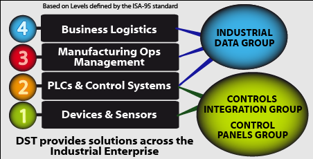

- For more than 30 years, DST Controls has designed and fabricated control system panels and OEM sub-systems for a wide range of industrial customers. DST's professional, multi-disciplined engineering staff offers completed panel installation and validation in addition to a full range of controls integration services.
Building on its controls expertise, DST has become a global leader in industrial data monitoring and integration services. Through DST's Industrial Data Services, customers can leverage the value of real-time process and manufacturing data by integrating it into existing systems such as maintenance, asset management, and back-end business platforms.
DST's range of products and services, and how they apply to customer organizations, can be best visualized using the International Society of Automation (ISA) definition for integration of enterprise and control systems in the diagram on the right. ISA-95 consists of models and terminology used to determine which information has to be exchanged between systems for production, maintenance, and quality purposes, as well as corporate systems for finance and the supply chain.
- ISA-95's models and definitions are often applied by DST Industrial Data professionals as a visualization aide for customers upgrading their Manufacturing Operations capabilities.

DST's Quality Management System is certified to be compliant to the ISO 9001:2008 standard. With a focus on Customer Satisfaction, this system provides policy and procedures for all of DST’s technical operations.Click image forCertificate of Registration
Click here for DST Quality Policy
){kind=link}
){kind=link}
Founder & CEO
After attending West Point, Bill served with US Army Special Forces before earning an engineering degree and beginning a career in industrial automation. Bill founded DST in 1975. He has since led the company's growth through a wide range of automation projects on five continents. His current passion is developing more efficient methods for monitoring the data that form the basis for Business Intelligence (BI).
 Read Hayward
Read HaywardVice President
Present at DST's founding, Read helped establish the company as a leader in control panel fabrication and sub-system manufacturing. Always customer-focused, he has served in various leadership roles, most recently as champion for the Industrial Data Services Group and manager of the company's key partner relationships. Read is an avid sailor and outdoors enthusiast.
Director of Sales
Bill has contributed management and controls engineering expertise to DST for 16 years, most recently as Director of Sales with responsibility for the performance of all three business groups. Bill's specialized skills include the design and project management of complex control systems, including those from Rockwell Automation, General Electric, and Siemens.
Marketing & Sales Manager, Mountain States
Bringing wide-ranging experience with industrial software and systems, Adrian joined DST in early 2013 charged with building the company's Industrial Data Services Group business. For the past 10 years he represented the OSIsoft PI System to customers in the Western US and Europe, including those in the oil & gas, mining, pharmaceutical, and power utility industries.
 Greg Dumas
Greg DumasChief Technology Officer
DST's Principal Engineer and "trusted advisor" to many customers, Greg has 25 years experience connecting industrial data to power systems, web clients, smart sensors and control systems. The holder of four patents, he leads DST software engineers in the production of custom software, design and implementation of real-time data monitoring systems and industrial operations infrastructure.
 Conn McLean P.E.
Conn McLean P.E.Director of Industrial Data Services
Director of Engineering
Conn oversees the technical staff of project managers, controls engineers, software engineers, and technicians. A skilled programmer and engineer on leading PLC, SCADA, and historian platforms, Conn also manages and executes engineering projects. A 14-year veteran of DST, Conn holds a MS Eng. degree from UC Davis and a P.E. license in Control Systems.